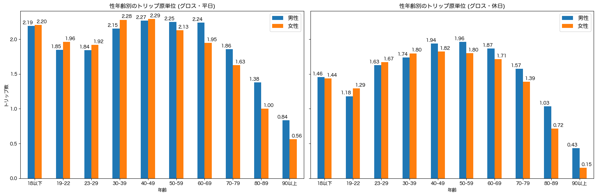
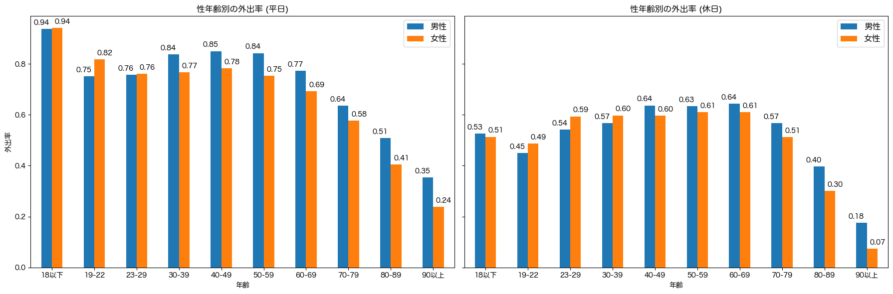
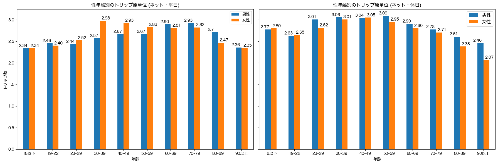

解説 2
性年齢別のトリップ原単位と外出率を、図1, 図2, 図3に示します。

図1：性年齢別のトリップ原単位（グロス）

図2：性年齢別の外出率

図3：性年齢別のトリップ原単位（ネット）
人口全体のトリップ原単位 (グロス。図1)は、19-22歳の大学生年代で低く、平日で1.85-1.96、休日で1.18-1.29です。 その後、平日・休日ともに40歳代・50歳代をピークとして上昇し、70歳代以降に急激に減少します。
特に注目すべき点に、19-22歳の大学生年代の休日のトリップ原単位が、70歳代より小さいことが挙げられます。
この原因は、外出率の低下と外出する人のトリップ数の減少によって説明できます。 図2の性年齢別の外出率によると、19-29歳の若年層の平日の外出率は、女性が76-82%と他の年代と比較して大きい一方、男性は75-76%と30-50歳代の外出率に比べて小さく、60歳代の外出率と同程度です。 また、休日の外出率は、19-22歳の男性が45%、女性が49%と70歳代 (男性57%、女性51%)より低くなっています。
図3に示す、外出した人の1日の平均トリップ数 (ネット原単位)によれば、平日のネット原単位は、29歳以下の年代で他の年代と比較して男女ともに小さいです。 また、休日のネット原単位も、19-29歳は30-60歳代と比べて小さく、特に19-22歳の大学生年代は70歳代と同水準です。
性別差に着目すると、20歳代までは男女の外出率は同程度か女性の方が少し大きいが、30歳代以降は男性の外出率の方が大きく、その差は高齢になるほど拡大します。 ネット原単位は、30-50歳代で女性のネット原単位が大きいです。 これは、女性の買い物トリップにより、外出する人の平均トリップ数が大きいと推察されます。 その他の年代では、男女で同程度か、男性の方が少し大きいです。